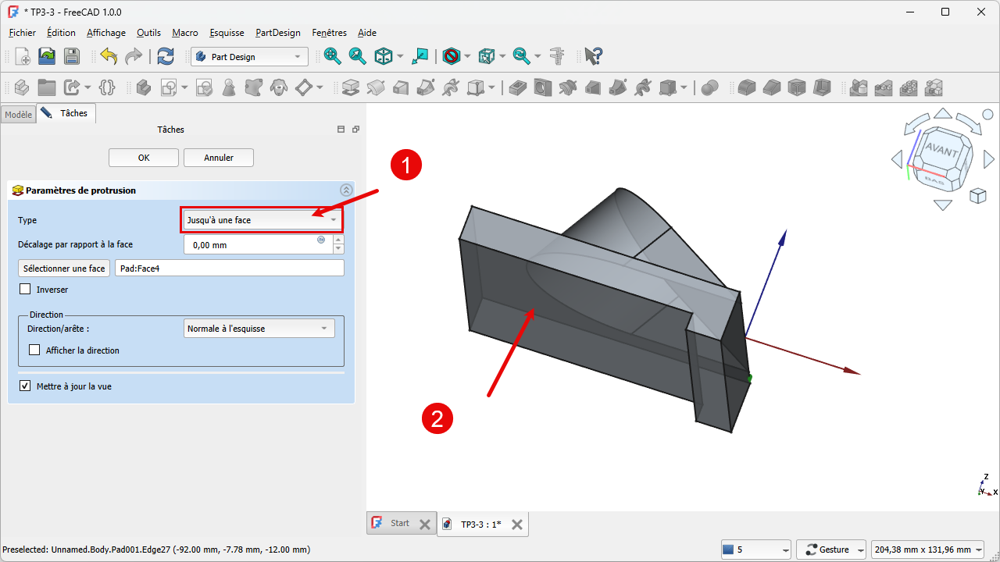
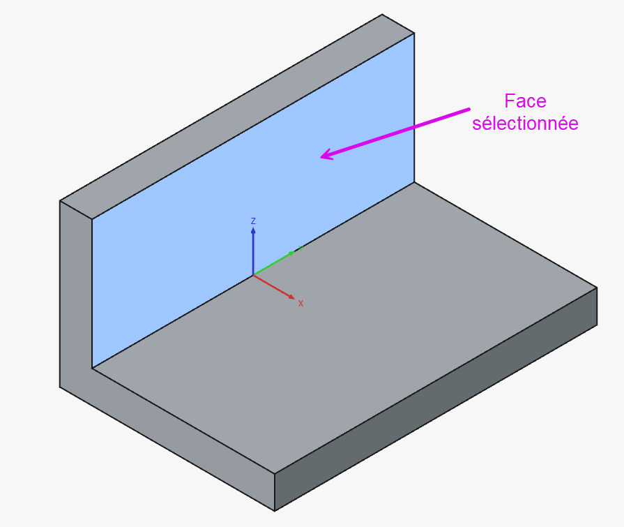
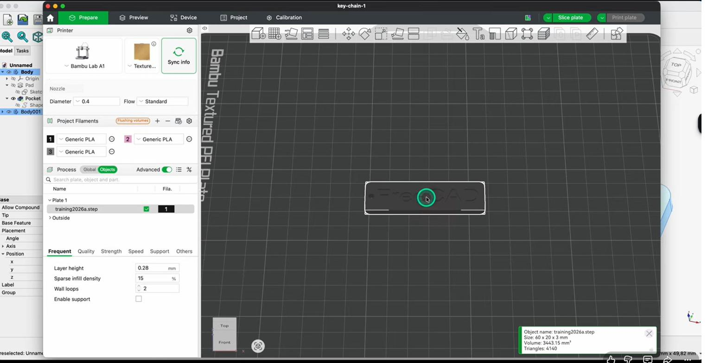

Van schets naar bakje + STL-exportDu croquis au boîtier + export STLFrom sketch to box + STL export
Nu wordt het echt 3D. We trekken de groene rechthoek uit H05 omhoog tot een vast volume met de Pad-functie, slaan het project op, en exporteren het naar een STL-bestand dat je slicer kan inlezen. Aan het eind van dit hoofdstuk heb je je eerste, echt printbare onderdeel — en is Niveau 1 rond.Place à la 3D. On extrude le rectangle vert de H05 en un volume avec Pad, on enregistre, puis on exporte en STL pour le slicer. À la fin : votre première pièce imprimable — et le Niveau 1 est bouclé.Now it gets truly 3D. We extrude the green rectangle from H05 into a solid with Pad, save the project, then export an STL file your slicer can read. By the end: your first genuinely printable part — and Level 1 is complete.
- een schets met Pad omzetten in een vast 3D-volumetransformer un croquis en volume avec Padturn a sketch into a solid with Pad
- de pad-hoogte en -modus instellen (symmetrisch, omgekeerd)régler la hauteur et le mode de Padset the pad height and mode
- het verschil tussen .FCStd en .STL uitleggenexpliquer la différence entre .FCStd et .STLexplain the difference between .FCStd and .STL
- je model naar STL exporteren voor de slicerexporter en STL pour le slicerexport your model to STL for the slicer
Workbench: Part Design (sluit eerst de schets).Atelier : Part Design.Workbench: Part Design (close the sketch first).
Commando: Part Design → Pad; veld Lengte in het Taken-paneel. Export: Bestand → Exporteren → STL.Commande : Part Design → Pad; champ Longueur. Export : Fichier → Exporter → STL.Command: Part Design → Pad; Length field. Export: File → Export → STL.
- Selecteer de groene schets.Croquis vert.Select the green sketch.
- Klik Part Design → Pad.Cliquez Part Design → Pad.Click Part Design → Pad.
- Lengte = 25; eventueel Symmetrisch/Omgekeerd.Longueur = 25.Length = 25.
- OK → opslaan als .FCStd.OK → .FCStd.OK → save .FCStd.
- Solid → Bestand → Exporteren → STL.Solide → Fichier → Exporter → STL.Solid → File → Export → STL.

01Pad: een schets wordt een volumePad : le croquis devient un volumePad: a sketch becomes a solid
Met Pad (in sommige bronnen "protrusie" genoemd) trek je een gesloten 2D-schets uit tot een 3D-volume — net zoals je een koekjesvorm door deeg duwt. Je selecteert de groene schets, kiest Pad, en geeft een hoogte. Voor de body van ons bakje padden we de 80 × 50 mm-basis bijvoorbeeld 25 mm omhoog.Avec Pad (« protrusion »), on extrude un croquis fermé en volume 3D. On sélectionne le croquis vert, on choisit Pad et on donne une hauteur. Pour le corps du boîtier, on extrude la base 80 × 50 mm de p. ex. 25 mm.With Pad (called "protrusion" in some sources), you extrude a closed 2D sketch into a 3D solid — like pushing a cookie cutter through dough. Select the green sketch, choose Pad, and give a height. For our box body we pad the 80 × 50 mm base by, say, 25 mm.

- 1Selecteer in de modelboom (of in 3D) de groene schets en klik Pad.Waarom: Pad werkt op een gesloten, liefst volledig bepaalde schets — vandaar het belang van groen in H05.Sélectionnez le croquis vert et cliquez Pad.Pourquoi : Pad agit sur un croquis fermé et contraint.Select the green sketch and click Pad.Why: Pad needs a closed, ideally fully constrained sketch.
- 2Geef een hoogte (bv. 25 mm).Waarom: de hoogte bepaalt hoe hoog de body van je behuizing wordt.Donnez une hauteur (p. ex. 25 mm).Pourquoi : c'est la hauteur du corps du boîtier.Give a height (e.g. 25 mm).Why: it sets how tall your enclosure body becomes.
- 3Kies eventueel symmetrisch t.o.v. het vlak of omgekeerd, en bevestig.Waarom: symmetrisch groeit het volume naar beide kanten van je schetsvlak; standaard groeit het naar één kant.Option symétrique ou inversé, puis validez.Pourquoi : symétrique extrude des deux côtés du plan.Optionally pick symmetric to plane or reversed, then confirm.Why: symmetric grows both ways from the sketch plane.
Pad blijft parametrisch: dubbelklik later op de Pad in de modelboom om de hoogte te wijzigen, of op de onderliggende schets om de afmetingen aan te passen. Het volume herrekent automatisch.Pad reste paramétrique : double-cliquez sur le Pad pour changer la hauteur, ou sur le croquis pour les cotes. Le volume se recalcule.Pad stays parametric: double-click the Pad later to change the height, or the underlying sketch for its dimensions. The solid recomputes.
02Opslaan: .FCStd is je echte projectEnregistrer : .FCStd, votre vrai projetSaving: .FCStd is your real project
Sla je werk op als .FCStd, het eigen formaat van FreeCAD. Daarin zit je volledige parametrische geschiedenis: alle schetsen, maten en bewerkingen blijven bewaard en wijzigbaar. Dit is het bestand waaraan je verder werkt.Enregistrez en .FCStd, le format de FreeCAD. Il contient tout l'historique paramétrique : croquis, cotes et opérations restent modifiables. C'est votre fichier de travail.Save as .FCStd, FreeCAD's own format. It holds your full parametric history: all sketches, dimensions and operations stay editable. This is the file you keep working on.
03Exporteren naar STL voor de slicerExporter en STL pour le slicerExporting to STL for the slicer
Een 3D-printer werkt niet met .FCStd, maar met een STL-bestand: een net van piepkleine driehoekjes (een mesh) dat het oppervlak van je onderdeel beschrijft. Slicer-programma's zoals Cura lezen die STL in en maken er printinstructies van. Je exporteert je solide naar STL; daarbij bepaalt de meshresolutie hoe fijn ronde vormen benaderd worden.Une imprimante 3D n'utilise pas le .FCStd mais un fichier STL : un maillage de petits triangles décrivant la surface. Les slicers (Cura) le lisent. La résolution du maillage détermine la finesse des formes rondes.A 3D printer doesn't use .FCStd but an STL file: a mesh of tiny triangles describing the surface. Slicers like Cura read it. The mesh resolution sets how finely round shapes are approximated.
- 1Selecteer je solide (de body) in de modelboom.Waarom: je exporteert specifiek dat onderdeel naar mesh.Sélectionnez le solide (le body).Pourquoi : on exporte cette pièce en maillage.Select your solid (the body).Why: you export that specific part to a mesh.
- 2Gebruik Bestand → Exporteren en kies het STL-formaat (of werk via het Mesh-atelier).Waarom: STL is het formaat dat je slicer verwacht.Fichier → Exporter, format STL (ou via l'atelier Mesh).Pourquoi : le STL est le format du slicer.File → Export, choose STL (or via the Mesh workbench).Why: STL is what your slicer expects.
- 3Open de STL in je slicer en controleer dat hij correct en op ware grootte (mm) verschijnt.Waarom: zo merk je meteen schaal- of mesh-fouten vóór het printen.Ouvrez le STL dans le slicer et vérifiez l'échelle (mm).Pourquoi : repérer les erreurs avant l'impression.Open the STL in your slicer and check it appears at true size (mm).Why: catch scale or mesh errors before printing.
.FCStd = je bewerkbare project (parametrisch). .STL = een "foto" van het oppervlak voor de printer, die je niet meer netjes parametrisch kunt wijzigen. Bewaar dus altijd je FCStd; exporteer telkens een verse STL als je iets wijzigt..FCStd = projet modifiable ; .STL = « photo » de surface pour l'imprimante, non paramétrique. Gardez le FCStd ; réexportez un STL à chaque changement..FCStd = your editable, parametric project; .STL = a surface "photo" for the printer, not parametric. Always keep the FCStd; re-export a fresh STL after each change.
Gefeliciteerd: je hebt je eerste printbare onderdeel! Dit massieve blok is de body van je behuizing. In Niveau 2 hollen we het uit tot een echte bak met wanden, en zetten we er een passend deksel op. De oriëntatie waarin je dit blok op de printplaat legt, bepaalt nu al de printtijd — daar denken we vanaf hier telkens over mee.Bravo : votre première pièce imprimable ! Ce bloc est le corps du boîtier. Au Niveau 2, on le creuse en boîte et on ajoute un couvercle. L'orientation sur le plateau influence déjà le temps d'impression.Congratulations: your first printable part! This block is the body of your enclosure. In Level 2 we hollow it into a real box and add a matching lid. How you orient this block on the bed already affects print time.
Pad je groene rechthoek tot een hoogte (bv. 25 mm). Sla op als .FCStd. Exporteer daarna naar STL en open het bestand in je slicer; controleer dat het op ware grootte staat. Wijzig tot slot in FreeCAD de pad-hoogte naar 30 mm en zie hoe het volume meegroeit — dat is parametrisch werken in actie.Extrudez le rectangle (p. ex. 25 mm). Enregistrez en .FCStd, exportez en STL, ouvrez dans le slicer. Changez la hauteur à 30 mm et observez.Pad your rectangle (e.g. 25 mm). Save as .FCStd, export STL, open it in your slicer. Then change the pad height to 30 mm and watch it update.

04Veelgemaakte foutenErreurs fréquentesCommon mistakes
- Padden op een nog niet vastgelegde schets. Werkt vaak wel, maar latere wijzigingen worden onvoorspelbaar. Maak de schets eerst groen (H05).Pad sur croquis sous-contraint. Risqué pour les modifications. Rendez-le vert d'abord.Padding an under-constrained sketch. Often works, but later edits get unpredictable. Make it green first (H05).
- Alleen de STL bewaren. Een STL kun je niet meer netjes wijzigen. Bewaar altijd ook je .FCStd.Ne garder que le STL. Non modifiable. Gardez aussi le .FCStd.Keeping only the STL. You can't cleanly edit an STL. Always keep your .FCStd too.
- Verkeerde schaal. Verschijnt je deel veel te klein/groot in de slicer, controleer dan je eenheden (mm) en de export.Mauvaise échelle. Vérifiez les unités (mm) et l'export.Wrong scale. If it's far too small/large in the slicer, check your units (mm) and the export.
Voor ronde delen (een knop, een asring, een antennevoet) draai je een doorsnede rond een as in plaats van ze recht op te trekken. Workbench: Part Design.Pour les pièces rondes (bouton, bague), on fait tourner un profil autour d'un axe. Atelier : Part Design.For round parts (a knob, a ring) you revolve a profile around an axis instead of padding it. Workbench: Part Design.
Commando: Part Design → Omwenteling (Revolve). Kies de as (bij voorkeur een basis-as, bv. Z) en de hoek (360° = volledige ronde vorm, of een deel zoals 60°).Commande : Part Design → Révolution. Axe (de préférence Z) + angle (360° ou partiel).Command: Part Design → Revolution. Pick the axis (prefer a base axis, e.g. Z) and the angle (360° or partial).
- Teken een halve doorsnede naast een as (bv. op het XZ-vlak).Dessinez un demi-profil près d'un axe.Sketch a half cross-section next to an axis.
- Sluiten → selecteer de schets → Part Design → Omwenteling.Fermez → Révolution.Close → select the sketch → Revolution.
- Kies de as en de hoek (360°) → OK.Axe + angle (360°) → OK.Pick the axis and angle (360°) → OK.
Hou één Body voor één massief deel. Heb je een tweede onderdeel nodig (bv. een deksel), maak dan een nieuwe Body (Part Design → Body maken) in plaats van een tweede losse vorm in dezelfde body. Dat houdt je model overzichtelijk en voorspelbaar.Un corps = une pièce. Pour une 2ᵉ pièce, créez un nouveau corps, pas une 2ᵉ forme dans le même corps.Keep one Body per solid part. Need a second part (e.g. a lid)? Make a new Body instead of a second loose solid in the same body.
In het Pad-paneel kies je bij Type de eindconditie — hoe ver je vorm wordt opgetrokken:Dans le panneau Pad, le Type fixe la condition de fin :In the Pad panel, Type sets the end condition — how far it extrudes:
- Op maat (Dimension): een vaste lengte.Cote : longueur fixe.Dimension: a fixed length.
- Symmetrisch: even ver naar beide kanten van het schetsvlak.Symétrique : des deux côtés.Symmetric: equally to both sides.
- Omgekeerd: de andere richting op.Inversé : l'autre sens.Reversed: the other way.
- Twee richtingen: verschillende lengtes naar twee kanten.Deux dimensions.Two dimensions: different lengths each way.
- Tot vlak: tot een vlak dat je aanwijst (met offset iets verder/korter).Jusqu'à la face (+ offset).Up to face: to a picked face (with offset).
- Tot eerste / tot laatste: tot het eerste of laatste vlak dat de vorm tegenkomt.Jusqu'au premier/dernier.To first / to last face met.
- Door alles: helemaal door het solid.À travers tout.Through all: fully through.
Dezelfde modi gelden voor Pocket (H09).Mêmes modes pour Pocket (H09).The same modes apply to Pocket (H09).
05Samenvatting
Met Pad wordt je gesloten schets een 3D-volume; de hoogte en modus bepaal je zelf, en alles blijft parametrisch. Bewaar je project als .FCStd (bewerkbaar) en exporteer naar .STL (mesh) voor de slicer. Daarmee sluit je Niveau 1 af: van een lege schets naar een echt printbaar onderdeel.Avec Pad, le croquis devient un volume (hauteur/mode réglables, paramétrique). Enregistrez en .FCStd, exportez en .STL. Niveau 1 bouclé : du croquis à une pièce imprimable.With Pad, your sketch becomes a solid (height/mode adjustable, parametric). Save as .FCStd, export to .STL. Level 1 done: from a sketch to a printable part.
- Pad = gesloten schets → 3D-volume (met instelbare hoogte).Pad = croquis fermé → volume 3D.Pad = closed sketch → 3D solid.
- .FCStd bewaren (bewerkbaar), .STL exporteren (printer).Gardez .FCStd, exportez .STL.Keep .FCStd, export .STL.
- Controleer in de slicer de schaal (mm).Vérifiez l'échelle (mm) dans le slicer.Check the scale (mm) in the slicer.